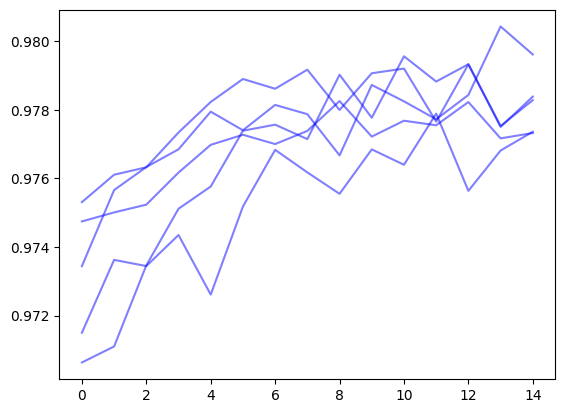

The main abstractions in emb_opt and how to use them
Overview
The goal of emb_opt is to use hill climbing to find high scoring items (defined by some score function) in a vector database without exhaustive screening of the database itself.
emb_opt takes advantage of the inherent structure present in embedding spaces. Starting with random points, we can use reinforcement learning to traverse the vector space to move from low scoring items to high scoring items.
This notebook gives an overview of the main abstractions in emb_opt and how they fit together.
from emb_opt.imports import*from emb_opt.schemas import Query, Item, Batchimport stringfrom datasets import Datasetimport matplotlib.pyplot as plt
/home/dmai/miniconda3/envs/emb_opt/lib/python3.9/site-packages/tqdm/auto.py:21: TqdmWarning: IProgress not found. Please update jupyter and ipywidgets. See https://ipywidgets.readthedocs.io/en/stable/user_install.html
from .autonotebook import tqdm as notebook_tqdm
Setup
First we need a vector database to query. Since this is a simple example notebook, we will work off a set of random vectors.
We will use the Datasets library to hold our vectors and build our index.
Our dataset will contain the following columns: * index - the ID of each item * item - the specific thing each embedding represents (in this case a random text string) * rand - a random number we will use for filtering * embedding - the embedding itself
n_vectors =10000size =64np.random.seed(42)vectors = np.random.randn(n_vectors, size)vector_data = [{'index' : i,'item' : ''.join(np.random.choice([i for i in string.ascii_lowercase], size=10).tolist()),'rand' : np.random.rand(),'embedding' : vectors[i] } for i inrange(n_vectors)]vector_dataset = Dataset.from_list(vector_data)vector_dataset.add_faiss_index('embedding')
emb_opt uses Pydantic data models to standardize inputs and outputs of various modules. Here we introduce several relevant data models.
Item Data Model
The Item data model is the standard format for something returned from a vector database
class Item(BaseModel):id: Optional[Union[str, int]] # id/index of item item: Optional[Any] # the item itself embedding: List[float] # embedding representing the item score: Optional[float] # item score data: Optional[dict] # any other associated data
Item.id is expected to be unique
Item.item is the object associated with the embedding. This field is optional, allowing for working purely in embedding space
Item.embedding is the item’s embedding
Item.score is the item’s score, which will be computed at a later point
Item.data is a dictionary of any other associated data
Query Data Model
The Query data model is the standard format for making a query to a vector database
class Query(BaseModel, extra='allow'): item: Optional[Any] # Optional item associated with query embedding: List[float] # Query embedding data: Optional[dict] # data associated with the query query_results: Optional[list[Item]] # list of `Item` query results
Query.item is the object associated with the embedding. If the Query is created from a specific Item, this field will be populated with Item.item. If the Query is a pure embedding query (ie created by averaging embeddings or a similar embedding-space process), Query.item will be None
Query.embedding is the query embedding
Query.data is a dictionary of any data related to the query
Query.query_results is a list of Item results returned by the query
Data Source
Now we need to convert our vector database into a format compatible with emb_opt. To integrate a data source, it must be compatible with the DataSourceFunction data model:
DataSourceFunction = Callable[List[Query], List[DataSourceResponse]]class DataSourceResponse(BaseModel): valid: bool# if input `Query` was valid (if False, associated `Query` is removed) data: Optional[Dict] # optional dict of data associated with the query query_results: List[Item] # list of `Item` results
from emb_opt.plugins.huggingface import HugggingfaceDataPlugin
k =10# return 10 items per querydata_plugin = HugggingfaceDataPlugin(k=k, dataset=vector_dataset, index_name='embedding', item_key='item', id_key='index', distance_cutoff=None )
Score Function
This is the score we want to maximize. To be compatible with emb_opt, the score function must be compatible with the ScoreFunction data model:
ScoreFunction = Callable[List[Item], List[ScoreResponse]]class ScoreResponse(BaseModel): valid: bool# if the input `Item` is valid (if False, associated `Item` is removed) score: Optional[float] # the score of the input `Item`. Can be `None` if `valid=False` data: Optional[Dict] # optional dict of data associated with the score response
For more details, see the ScorePlugin documentation.
For our score function, we will use a function that has a maxima at the point [0.75, 0.75, ... 0.75] and a score value that decays exponentially with respect to distance from that point.
score_embeddings will compute the score using numpy arrays, and score_plugin will wrap this function to make the inputs and outputs compatible with the ScoreFunction data model
from emb_opt.schemas import ScoreResponse
def score_embeddings(embeddings: np.ndarray, sigma: float=5.) -> np.ndarray: target_point = np.ones(embeddings.shape[1])*.75 distances = np.linalg.norm(embeddings - target_point, axis=1) / np.sqrt(embeddings.shape[1]) scores = np.exp(-0.5* (distances/sigma)**2)return scoresdef score_plugin(inputs: List[Item]) -> List[ScoreResponse]: embeddings = np.array([i.embedding for i in inputs]) scores = score_embeddings(embeddings) results = [ScoreResponse(valid=True, score=i, data=None) for i in scores]return results
Filter Function
In some cases, we may wish to filter scores prior to scoring. We can implement filtering directly in the score function using the ScoreResponse.valid field, but it may be more efficient to separate the steps as filtering before scoring allows us to removed items that fail the filter and rebatch only valid items for scoring.
Filter functions are defined by the FilterFunction data model
FilterFunction = Callable[List[Item], List[FilterResponse]]class FilterResponse(BaseModel): valid: bool# if the input `Item` is valid (if False, associated `Item` is removed) data: Optional[Dict] # optional dict of data associated with the filter response
For more details, see the FilterPlugin documentation.
When we generated our dataset, we added a rand column containing a random value between 0 and 1. As an example filter function, we will reject any item where rand >= 0.9
from emb_opt.schemas import FilterResponse
def filter_plugin(inputs: List[Item]) -> List[FilterResponse]:return [FilterResponse(valid=i.data['rand']<0.9, data={'rand':i.data['rand']}) for i in inputs]
Update Function
After filtering and scoring, every Query will have a list of query result Item objects that have been scored. The update step uses this information to generate a new query.
We can use any update method that corresponds to the UpdateFunction data model
UpdateFunction = Callable[List[Query], List[UpdateResponse]]class UpdateResponse(BaseModel): query: Query # the new `Query` parent_id: Optional[str] # optional parent query ID, used for tracking query progression
For this example, we will use reinforcement learning to estimate the gradient of the query based on the scored results, and use gradient descent to update.
The Runner class holds all these objects together and executes the search. The search algorithm follows: 1. Query the data source 2. Filter results 3. Score results 4. Use scores to create new queries
from emb_opt.runner import Runner
# the `None` keyword corresponds to a prune plugin, which is explained in another tutorialrunner = Runner(data_plugin, filter_plugin, score_plugin, None, update_plugin)
Initialize
We start with 5 random query embeddings. These are converted into a Batch using the build_batch_from_embeddings function. The Batch data model holds a list of embeddings, with several helper functions for iterating over queries and query results
from emb_opt.utils import build_batch_from_embeddings
The search log contains 186 items. This represents a 1.8% screening of the total search space.
Now we’ll look at the fraction of top k ground truth items recovered.
We can see the queries successfully found the top scoring result, but only 40% of the top 10 results. Methods to tune performance are discussed in other tutorials.
k_vals = [1, 5, 10, 50]recovered_ids =set([i['id'] for i in results])metrics = []for k in k_vals: gt_idxs =set(ground_truth[:k]['index']) percent_recovered =len(gt_idxs.intersection(recovered_ids))/k metrics.append(percent_recovered)metrics
[1.0, 0.4, 0.4, 0.2]
The search_log also contains a query_tree which maps out the progression of queries through the search. We can use this to reconstruct trajectories of the average score over the search
for final_node in search_log.query_tree.leaf_nodes(): max_scores = [] current = final_nodewhile current: max_scores.append(current.mean_score) current = current.parent plt.plot(max_scores[::-1], color='b', alpha=0.5)

Coments on results
The compiled results returned 186 items. We used 5 query vectors with 10 items returned per query over 15 iterations. This implies 750 total items should have been returned. The reduction from 750 total items to 186 is a result of the query vectors converging to the same location and returning duplicate items.
The degree of duplicate results depends on: * size of the vector database * how query vectors are initialized * how many local optima exist for your score function * how many iterations are run * how many results are returned per query
Conclusions
This notebook gave a brief overview of the main components of emb_opt. We used hill climbing to find the top scoring item in a vector dataset while only evaluating 1.8% of the total search space.
The next set of tutorials will go over advanced usage of the library and methods to tune performance.